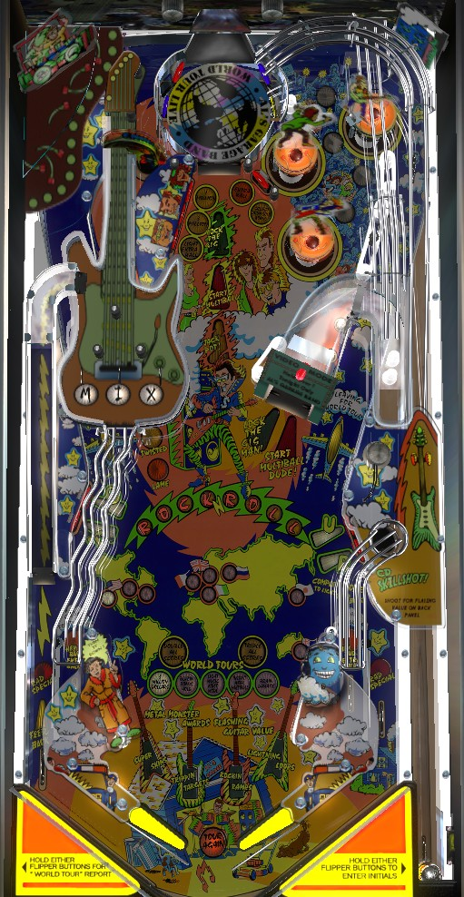

Play multiball as frequently as possible. The most straightforward way to light locks is by competing the 3-bank of standup targets along the left side of the center lane. Lock balls at the CD hole in the back of the game or right ramp. In multiball, the CD hole scores repeated jackpots. Jackpot value increases the longer you wait before scoring the first jackpot, and subsequent jackpots score 2x, 3x, and 4x value. To supercharge this feature, shoot the right ramp or CD hole to earn letters in ROCKROLL, which awards a 2x or 3x playfield multiplier when spelled and can be applied to jackpots.
The below picture of Al's Garage Band Goes on a World Tour's playfield was taken from the VPX recreation by Goldchicco et al.

The skill shot is a timing skill shot based on when the plunge button is pressed. The lit value on the DMD will rotate back and forth between 1,000,000, 2,000,000, Jam Jackpot, 3,000,000, and 4,000,000 points. The lit value is awarded when the ball enters the CD turntable at the top of the game, so you need to lead your shot a little bit to get what you want. Jam Jackpot scores 5,000,000 points times the current ball number. Skill shots can only be earned at the very beginning of a ball, not after locks are made for multiball.
To light locks for multiball, complete the Band Member targets, which are located along the left side of the center lane, facing the pop bumpers. To begin, one target of the three is flashing, moving between the three shown awards: 1,000,000, 3,000,000, or Light Extra Ball. Hitting any of the three targets locks in the moving award, then lights the hit target solidly. The moving award will continue to move around the targets that have not been hit yet, but it is locked in as soon as one target is hit. Lighting all 3 targets solidly counts as one completion of the Band Member targets (Dr. Skins, Delmore, and Stitchy) and collects whatever award was locked in. If you have not yet collected a jackpot from any multiball, it takes 1 band member completion to light locks; if you have collected one or more jackpots previously, it takes 3 completions to light locks.
Locks can be made at the CD hole in the back of the game or the right ramp. Lock 3 balls to start multiball. The right ramp can only be used to lock ball #3 if you have not played multiball yet in the current game; if you have, lock 3 needs to be made at the CD hole only.
In multiball, nearly all playfield features are in play, but the main attraction is the jackpots. For your first multiball, the starting jackpot appears to be 10,000,000, which increases to 20,000,000 or 30,000,000 if 2 or all 3 of your locks were at the CD, respectively. Thereafter, the jackpot picks up where it left off in the previous multiball. Within each multiball, the jackpot will raise on its own by about 200,000 at a time, up to a maximum of 50,000,000. However, if no switches are hit anywhere in the game for more than about 2 seconds, the jackpot will begin falling by about 200,000 per 1/4-second. Hitting any switch will cause the jackpot to raise again, and the jackpot cannot go lower than whatever base value there was at the start of the first multiball.
Jackpots are made at the CD hole. Making one jackpot locks in that jackpot value for the rest of multiball, and it cannot be raised or lowered. Further jackpots within the same multiball score 2x, 3x, and a repeatable 4x the selected jackpot value. There is no need to relight jackpots after making one; the CD hole is always lit. The CD hole and right ramp still award ROCKROLL letters during multiball, and the 2x or 3x playfield earned from completing ROCKROLL stacks on top of the normal jackpot progression, for a potential 600,000,000 points triple 4x jackpot; the ROCKROLL playfield multipliers are discussed further later in the guide.
If a multiball ends before any jackpots are scored, you can shoot the CD hole within 15 seconds for an instant multiball restart.
To start Metal Monster modes, shoot the lane just to the right of the left orbit that goes under the guitar upper playfield. For the first Metal Monster mode in a game, just one shot scores 5,000,000 points and starts the flashing mode, which is indicated and rotated by the pop bumpers. After one mode has been played, it takes 3 shots to the lane to start another, with the first two scoring Lame (1,000,000) and Twisted (3,000,000). There are 4 Metal Monster modes, which all last for 25 seconds and increase the value of a specific feature around the playfield.
There is a limit of 99,000,000 points that can be earned from a single play of any Metal Monster mode. Points from a Metal Monster mode are not added to your score until the mode times out, or if you drain during a mode, they'll be added then. Immediately after the 4th mode ends, the Guitar Bonus hurry-up begins; it starts at 100,000,000 points and loses about 5,000,000 per second. Shoot the Metal Monster lane to collect the hurry-up and light an extra ball at the Drum Solo target. For the first three modes, draining during the mode uses up that mode, and it cannot be replayed. For the 4th mode, draining during the mode causes the game to act like it has not been played, giving you another chance to complete it and start the Guitar Bonus hurry-up. If you drain during the hurry-up or let it time out, though, the points and the extra ball chance are lost unless all 4 modes are played again.
Metal Monster modes can be started and played during multiball.
A full shot to either orbit at any time advances a city, and collecting enough cities awards the next prize in order from left to right at the white World Tours inserts near the slingshots. The exact number of cities needed to advance to each prize appears to be slightly inconsistent, for currently unknown reasons, so this breakdown may not be exact.
Brain Damage wizard mode consists of a standard multiball stacked with all 4 Metal Monster modes at once, as well as Special lit on the out lanes and Extra Ball lit at the Drum Solo target. Multiball jackpots can only be collected when there is more than one ball in play, but the 4 Metal Monster modes will keep running with no time limit for the remainder of the ball in play. Each Metal Monster mode is still subject to its normal limit of 99,000,000 points. No further cities or World Tour prizes can be earned on a ball where Brain Damage is started.
Any shot to the CD hole or right ramp at any time, including multiball, awards a letter in ROCKROLL. Spelling ROCKROLL starts 10 seconds of playfield multiplier; 2x the first time, and 3x any time after that. This playfield multiplier can be applied to any scoring in the game, including the Guitar Bonus hurry-up and any multiball jackpot. To make up a large score quickly: start multiball, shoot the right ramp until ROCKROLL is spelled (even better if it can be backhanded from the right flipper), then score a jackpot with playfield multiplier running.
The guitar upper playfield is accessed by shooting the Metal Monster popper for progress toward a mode start, or by using the left out lane kickback. Roll through an unlit MIX lane to light it. Flipper lane change can be used to move lit MIX lanes in either direction. Completing MIX advances the bonus multiplier toward its maximum of 10x.
Earning the third World Tour prize or completing MIX for the first time in a game lights the right ramp for Video Mode during single ball play. During Video Mode, press the two flipper buttons as many times as possible in 8 seconds. Each hit to either flipper is worth 100,000 points; this mode is usually worth between 10,000,000 and 12,000,000 points.
The drum solo bonus increases for as long as the ball is in the pop bumpers. Hitting a single pop bumper adds 50,000 to the bonus; hitting more in a single trip will cause the bonus to keep going up 5,000 at a time until the ball leaves the pops. The Drum Solo bonus can be built across multiple pop bumper trips and exceed 1,000,000 points. Hitting the Drum Solo target collects and resets the current Drum Solo bonus. The game makes a big deal about this feature whenever it is advanced or collected, but it is extremely worthless compared to the rest of the game's scoring features. The Drum Solo target should be entirely ignored unless it is lit for Extra Ball following a Guitar Bonus hurry-up collect, Band Member target completion, or starting Brain Damage wizard mode.
Hitting a flashing Tour target in the lower left or lower right to light that target solidly. Light all 4 targets solidly to relight the Feedback kickback in the left out lane if it is not already lit.
Al's Garage Band has a conventional in/out lane setup. In lanes can be lit for extra ball as a compensation feature on the last ball of a long game. Out lanes are lit for Special by starting Brain Damage wizard mode. The Feedback kickback in the left out lane sends the ball up a ramp and onto the guitar upper playfield, and is relit by completing Tour.
Bonus appears to simply be based on a count of switch hits. The base bonus can exceed 1,000,000 points, but this is rare. Bonus multipliers are earned from completing the MIX lanes on the guitar playfield. Max bonus multiplier is 10x. Base bonus can be held from ball to ball by collecting the Blazin Bonus Hold prize from World Tours. Bonus multiplier can never be carried from ball to ball. Bonus cannot be collected mid-ball, and is often a rather irrelevant component of scoring.
There does not seem to be a way to set an extra ball or Special to score points for competition/novelty play.
MIX lanes and lit extra balls at the Drum Solo target can be set not to carry over from ball to ball. By default, both do.
On easy settings, shots to the right ramp or CD hole will spot one target toward a Band Member completion for qualifying locks. On hard settings, each step of progress toward lighting multiball locks requires 2 Band Member completions instead of one.
The kickback can be on at the start of every ball or off at the start of every ball. The default setting is that it is lit at the start of the game and its status is kept in memory from ball to ball.